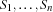
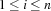
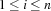
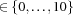

5.2 The Concept of Constructive Disjunction
The operational semantics of some propagators is based on the concept of constructive disjunction which allows to lift common information from different clauses of a disjunctive constraint.
Constructive disjunction is not available as program combinator in Oz. Anyway, we use it in Oz program fragments (by the keyword condis) to describe the operational semantics of certain propagators. For example such propagators are FD.tasksOverlap and FD.disjoint.
Constructive disjunction adopts the operational semantics of the nondistributable disjunction of Oz (or ... end) concerning entailment and failure of clauses. Furthermore, it extends the semantics as follows: Assume a disjunction with n clauses and let S be the constraint store of the computation space in which it resides. Let  denote the local stores of the n clauses. Then the strongest constraint C consisting of basic constraints  with
with  for  is lifted and added to S.
for  is lifted and added to S.
As an example consider the store X, Y and
condisX + 9 =<: Y
[] Y + 9 =<: X
end
Constructive disjunction narrows the domains of X and Y to  .
.